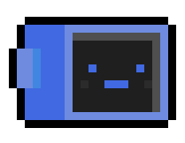

Sky Yun
Current highschool student. Built this site.
Beginner at programming. Trying to learn
C++ but failing miserably.
- Canada, BC
About Me
Hello! My name is Sky :). Welcome to my about me page! I am currently a high school student in BC and will attend a post-secondary school to major in computer science starting this September of 2021. Occasionally, I enjoy playing a few tunes on the piano and watching animated films.
Frankly, I never thought that I would pursue a career path in computer science; I thought it was not my forte. But during the pandemic, my brother, who is also my mentor for this project, suggested that I learn Python. So, later on, I searched up a tutorial on Python and printed my first hello world. Ever since then, I've loved learning about programming and discovered a new interest.
The past year, between 2020 and 2021, I've only built relatively simple projects in Python, ranging from text-based programs to functioning games (bug-filled but functioning). So now I am excited to have the opportunity to showcase what I have learned through this website and how teaching yourself a new subject can yield satisfying results.
Goals
x
-
Programming Goals:
- Learn C++ or another programming language
- Create more responsive sites
- Learn about linked-lists
Current Goals
- Play Waltz in B minor
- Graduate and go to post-secondary
